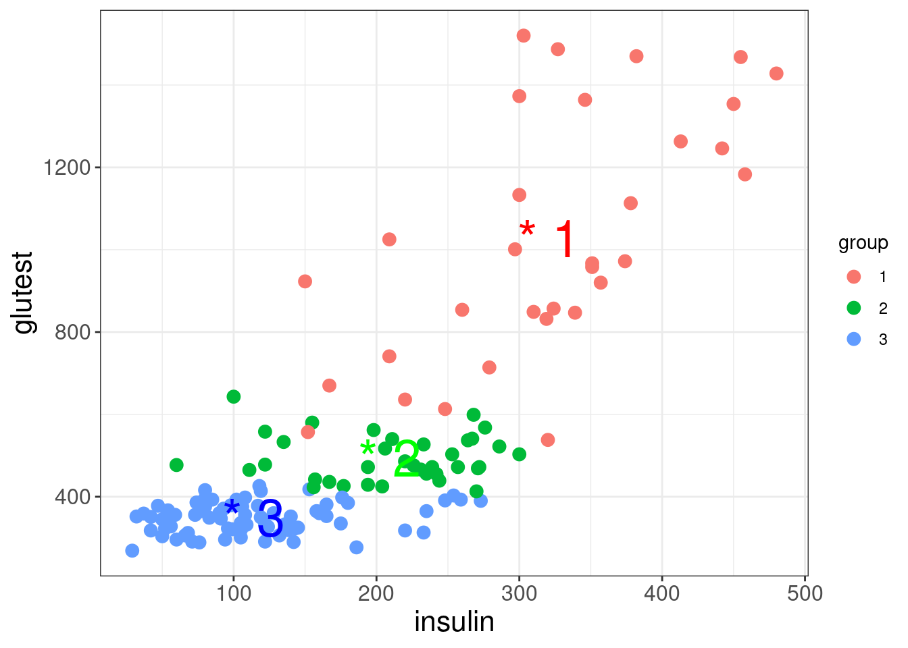

Least Squares Estimation
Some basic matrix algebra
This section is a recap only, if you need a more in-depth overiew of matrix algebra then use the extra materials provided at the start of this module.
Matrices are commonly written in box brackets or parentheses and are typically denoted by upper case bold letters (e.g., A) with elements represented by the corresponding lower case indexed letters:
\[\mathbf {A} = \begin{bmatrix}a_{11}&a_{12}&\cdots &a_{1n}\\a_{21}&a_{22}&\cdots &a_{2n}\\\vdots &\vdots &\ddots &\vdots \\a_{m1}&a_{m2}&\cdots &a_{mn}\end{bmatrix}\]
The entry in the \(i^{th}\) row and \(j^{th}\) column of a matrix A is often referred to as the \((i,j)^{th}\) entry of the matrix, and most commonly denoted as \(a_{i,j}\), or \(a_{ij}\).
Matrix addition
The sum A + B of two m-by-n matrices A and B: \[\begin{array}{rl} \mathbf {A} + \mathbf {B} &= \begin{bmatrix}a_{11}&a_{12}&\cdots &a_{1n}\\a_{21}&a_{22}&\cdots &a_{2n}\\\vdots &\vdots &\ddots &\vdots \\a_{m1}&a_{m2}&\cdots &a_{mn}\end{bmatrix} + \begin{bmatrix}b_{11}&b_{12}&\cdots &b_{1n}\\b_{21}&b_{22}&\cdots &b_{2n}\\\vdots &\vdots &\ddots &\vdots \\b_{m1}&b_{m2}&\cdots &b_{mn}\end{bmatrix} \\ &= \begin{bmatrix}a_{11} +b_{11}&a_{12}+b_{12}&\cdots &a_{1n}+b_{1n}\\a_{21}+b_{21}&a_{22}+b_{22}&\cdots &a_{2n}+b_{2n}\\\vdots &\vdots &\ddots &\vdots \\a_{m1}+b_{m1}&a_{m2}+b_{m2}&\cdots &a_{mn}+b_{mn}\end{bmatrix}\end{array}\]
Scalar multiplication
The product cA of a number c and a matrix A:
\[c\times \mathbf {A} = \begin{bmatrix}c\times a_{11}&c\times a_{12}&\cdots &c\times a_{1n}\\c\times a_{21}&c\times a_{22}&\cdots &c\times a_{2n}\\\vdots &\vdots &\ddots &\vdots \\c\times a_{m1}&c\times a_{m2}&\cdots &c\times a_{mn}\end{bmatrix}\]
Matrix transposition
The transpose of an m-by-n matrix A is the n-by-m matrix A\(^T\):
\[\mathbf {A}^\text{T} = \begin{bmatrix}a_{11}&a_{12}&\cdots &a_{1n}\\a_{21}&a_{22}&\cdots &a_{2n}\\\vdots &\vdots &\ddots &\vdots \\a_{m1}&a_{m2}&\cdots &a_{mn}\end{bmatrix}^\text{T} = \begin{bmatrix}a_{11}&a_{21}&\cdots &a_{m1}\\a_{12}&a_{22}&\cdots &a_{m2}\\\vdots &\vdots &\ddots &\vdots \\a_{1n}&a_{2n}&\cdots &a_{mn}\end{bmatrix}\]
Matrix multiplication
Multiplication of two matrices is defined if and only if (\(iif\)) the number of columns of the left matrix is the same as the number of rows of the right matrix. If A is an m-by-n matrix and B is an n-by-p matrix, then their matrix product AB is the m-by-p matrix whose entries are given by dot product of the corresponding row of A and the corresponding column of B:
\[[\mathbf {AB} ]_{i,j}=a_{i,1}b_{1,j}+a_{i,2}b_{2,j}+\cdots +a_{i,n}b_{n,j}=\sum _{r=1}^{n}a_{i,r}b_{r,j}\]
Note Matrix multiplication satisfies the rules (AB)C = A(BC) (associativity), and (A + B)C = AC + BC as well as C(A + B) = CA + CB (left and right distributivity), whenever the size of the matrices is such that the various products are defined. The product AB may be defined without BA being defined, namely if A and B are m-by-n and n-by-k matrices, respectively, and m \(\neq\) k. Even if both products are defined, they generally need not be equal, that is: AB \(\neq\) BA.
Linear least squares
Recall the linear regression (with a simple explanatory variable) equation from Module 2:
\[Y_i = \alpha + \beta_1x_i + \epsilon_i\] where
\[\epsilon_i \sim \text{Normal}(0,\sigma^2).\]
Here for observation \(i\)
- \(Y_i\) is the value of the response
- \(x_i\) is the value of the explanatory variable
- \(\epsilon_i\) is the error term: the difference between \(Y_i\) and its expected value
- \(\alpha\) is the intercept term (a parameter to be estimated), and
- \(\beta_1\) is the slope: coefficient of the explanatory variable (a parameter to be estimated)

Recall, that the Euclidean distance between two points is calculated as
\[\sqrt{(x_1 - x_2)^2 + (y_1 - y_2)^2}\]
The method of least squares estimation works by minimising the distances between each observation and the line of fit (i.e., the residuals). The line-of best fit is the line with the smallest residual sum (i.e., all the possible red lines in the figures)!

Matrix representation of a CRD
Let’s consider the CRD outlined in the previous module, we can write the effects model using matrix representation:
\[\boldsymbol{y} = \boldsymbol{X\beta} + \boldsymbol{\epsilon}\]
where
\(\boldsymbol{y} = \begin{bmatrix} y_{11} \\ y_{12} \\ y_{13} \\ y_{14} \\ y_{21} \\ y_{22} \\ y_{23} \\ y_{24} \\ y_{31} \\ y_{32} \\ y_{33} \\ y_{34} \end{bmatrix}\), \(\boldsymbol{X} = \begin{bmatrix} 1 & 1 & 0 & 0 \\ 1 & 1 & 0 & 0 \\ 1 & 1 & 0 & 0 \\ 1 & 1 & 0 & 0 \\ 1 & 0 & 1 & 0 \\ 1 & 0 & 1 & 0 \\ 1 & 0 & 1 & 0 \\ 1 & 0 & 1 & 0 \\ 1 & 0 & 0 & 1 \\ 1 & 0 & 0 & 1 \\ 1 & 0 & 0 & 1 \\ 1 & 0 & 0 & 1 \end{bmatrix}\), \(\boldsymbol{\beta} = \begin{bmatrix} \alpha \\ \tau_1 \\ \tau_2 \\ \tau_3 \end{bmatrix}\), and \(\boldsymbol{\epsilon} = \begin{bmatrix} \epsilon_{11} \\ \epsilon_{12} \\ \epsilon_{13} \\ \epsilon_{14} \\ \epsilon_{21} \\ \epsilon_{22} \\ \epsilon_{23} \\ \epsilon_{24} \\ \epsilon_{31} \\ \epsilon_{32} \\ \epsilon_{33} \\ \epsilon_{34} \end{bmatrix}.\)
where \(\boldsymbol{\epsilon} \sim \text{MVN}(\boldsymbol{0}, \boldsymbol{\sigma^2 I})\). The least squares estimators of \(\boldsymbol{\beta}\) are the solutions to the \[\boldsymbol{X^{'}X\beta}=\boldsymbol{X^{'}y}\].
Recall that for a factor variable we take the one level (the first factor) into the baseline (i.e., the standard) and hence then the coefficients we estimate are compared to it (i.e., the differences in the mean). This is to ensure that the matrix \(\boldsymbol{X}\) is full rank. So
\[\boldsymbol{X} = \begin{bmatrix} 1 & 0 & 0 \\ 1 & 0 & 0 \\ 1 & 0 & 0 \\ 1 & 0 & 0 \\ 1 & 1 & 0 \\ 1 & 1 & 0 \\ 1 & 1 & 0 \\ 1 & 1 & 0 \\ 1 & 0 & 1 \\ 1 & 0 & 1 \\ 1 & 0 & 1 \\ 1 & 0 & 1 \end{bmatrix}\]
Now, with three factor levels the least squares estimators of \(\boldsymbol{\beta}\) are (note the hat to denote the estimates)
\[(\boldsymbol{X^{'}X})^{-1}\boldsymbol{X^{'}y} = \boldsymbol{\hat{\beta}}= \begin{bmatrix} \hat{\alpha} - \hat{\tau_1} \\ \hat{\tau_2} - \hat{\tau_1} \\ \hat{\tau_3} - \hat{\tau_1} \end{bmatrix} \]
A numeric example
Using the coffee data from the previous chapter we have
| Beans | Strength |
|---|---|
| Type 1 | 5.3 |
| Type 1 | 6.0 |
| Type 1 | 6.6 |
| Type 1 | 4.9 |
| Type 2 | 7.5 |
| Type 2 | 7.1 |
| Type 2 | 6.3 |
| Type 2 | 7.6 |
| Type 3 | 8.8 |
| Type 3 | 6.9 |
| Type 3 | 9.2 |
| Type 3 | 10.3 |
Using our matrix algebra
so
\(\boldsymbol{X^{'}X} = \begin{bmatrix}12&4&4 \\4&4&0 \\4&0&4 \\\end{bmatrix}\), \(\boldsymbol{X^{'}y} = \begin{bmatrix}86.5 \\28.5 \\35.2 \\\end{bmatrix}\), and \((\boldsymbol{X^{'}X})^{-1} = \begin{bmatrix}0.25&-0.25&-0.25 \\-0.25&0.5&0.25 \\-0.25&0.25&0.5 \\\end{bmatrix}.\)
Therefore,
\[\boldsymbol{\hat{\beta}} = (\boldsymbol{X^{'}X})^{-1}\boldsymbol{X^{'}y} = \begin{bmatrix} \hat{\alpha} - \hat{\tau_1} \\ \hat{\tau_2} - \hat{\tau_1} \\ \hat{\tau_3} - \hat{\tau_1} \end{bmatrix} = \begin{bmatrix}0.25&-0.25&-0.25 \\-0.25&0.5&0.25 \\-0.25&0.25&0.5 \\\end{bmatrix} \times \begin{bmatrix}86.5 \\28.5 \\35.2 \\\end{bmatrix} = \begin{bmatrix}5.7 \\1.425 \\3.1 \\\end{bmatrix}\]
Using lm in R
Linear least squares estimation can be carried out in R by simply using the function lm():
## Estimate Std. Error t value Pr(>|t|)
## (Intercept) 5.700 0.4934994 11.550166 0.000001065454
## BeansType 2 1.425 0.6979136 2.041800 0.071556522658
## BeansType 3 3.100 0.6979136 4.441811 0.001619249110